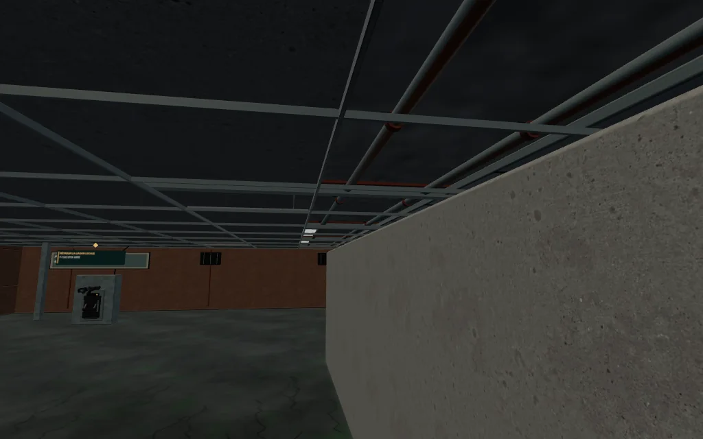
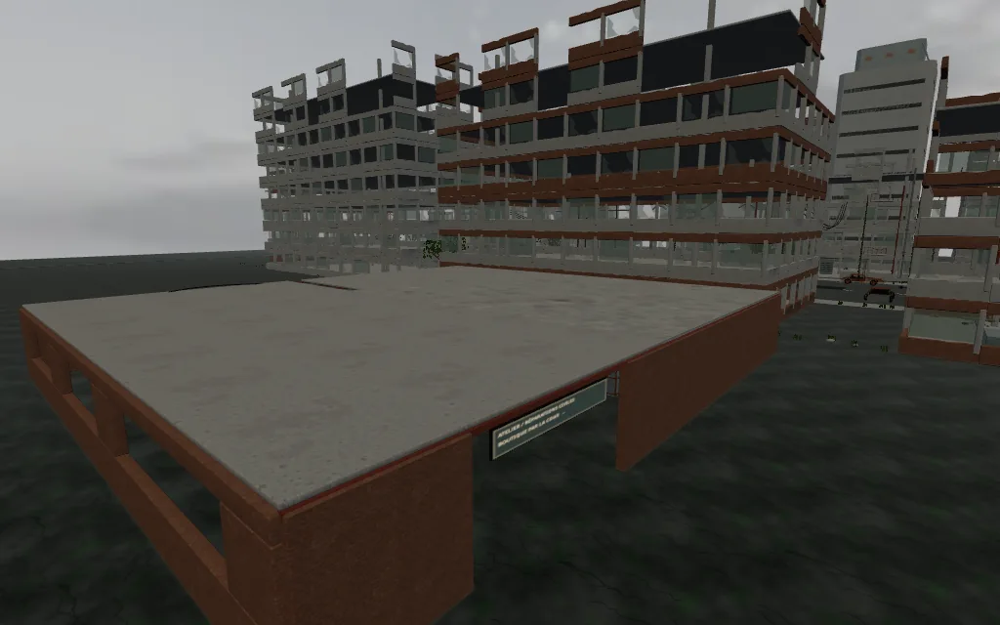

Des intérieurs fermés.
Des tirs plus physiques.
TOITURES · ARRIVÉE CALME · SONFaux plafonds suspendus, poutres, conduits et toits continus. Le début de M01 laisse le temps d’entrer dans le quartier : les premières patrouilles s’activent après la sortie de la zone d’arrivée.

Dalles vieillies, poutres en I, tuyaux avec manchons et ventilation au-dessus d’une bande technique ouverte.

Les parties encore ouvertes de l’atelier sont fermées. Le laboratoire reçoit aussi son toit ; la cour de livraison garde son rôle d’espace extérieur.
Écouter les armes
Les sons mêlent un corps enregistré et une signature énergétique discrète. Commence avec un volume modéré.
Touchez une arme pour lancer un tir.
Captures du rendu réel du jeu. Enregistrements : The Free Firearm Sound Library · CC0, complétés par les effets déjà intégrés. Les tests sur iPhone et Quest physiques restent à faire.